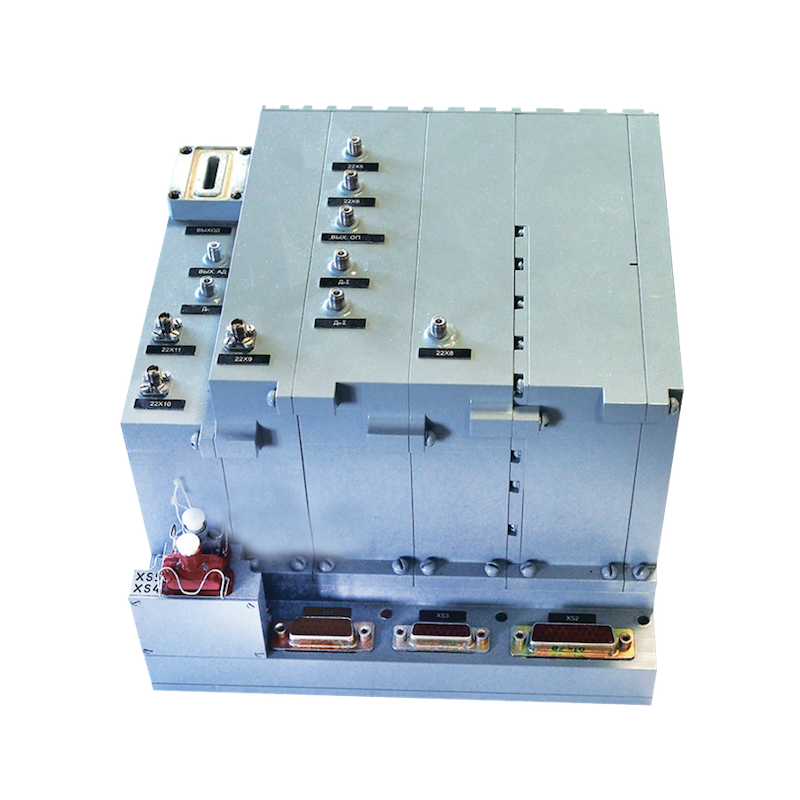

UМ511011
Многофункциональный синтезатор частот с малым уровнем частотных и амплитудных флуктуаций, предназначенный для работы в бортовых радиолокационных станциях, для формирования сетки частот выходных сигналов в 3-х сантиметровом диапазоне и сетки гетеродинных частот, соответствующих каждой частоте выходного сигнала, а также частоты второго гетеродина и опорных частот (частот синхронизации).

| число рабочих частот | 45 |
| выходная мощность, мВт | 400-720 |
| время переключения рабочих частот, мкс, не более | 10 |
| спектральная плотность мощности фазового шума при отстройке от несущей на: | |
| 2 кГц, дБ/Гц | -104 |
| 10 кГц, дБ/Гц | -115 |
| 50 кГц, дБ/Гц | -130 |
| 170 кГц, дБ/Гц | -130 |
| относительный уровень паразитных составляющих при отстройке от несущей на ±(500 МГц, дБ, не более | -80 |